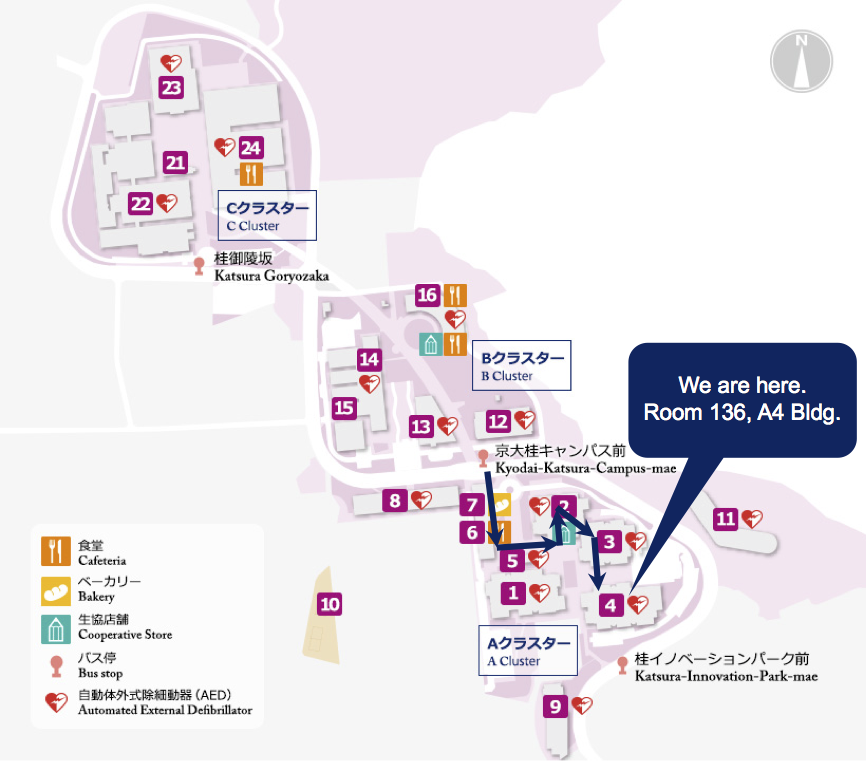

Please contact us if you are interested in our research.
白川研究室の研究にご興味を持たれた方は是非ご連絡ください。
〒615-8510 京都市西京区京都大学桂 京都大学桂キャンパスA4棟1階 136号室
Kyoto University Katsura, Nishikyo-ku, Kyoto, 615-8510, Japan
Telephone: +81-(0)75-383-2535
Email: shirakawa (at) moleng.kyoto-u.ac.jp
桂キャンパスへのアクセス https://www.t.kyoto-u.ac.jp/ja/access/katsura
Access to Katsura Campus https://www.t.kyoto-u.ac.jp/en/access/katsura?set_language=en
